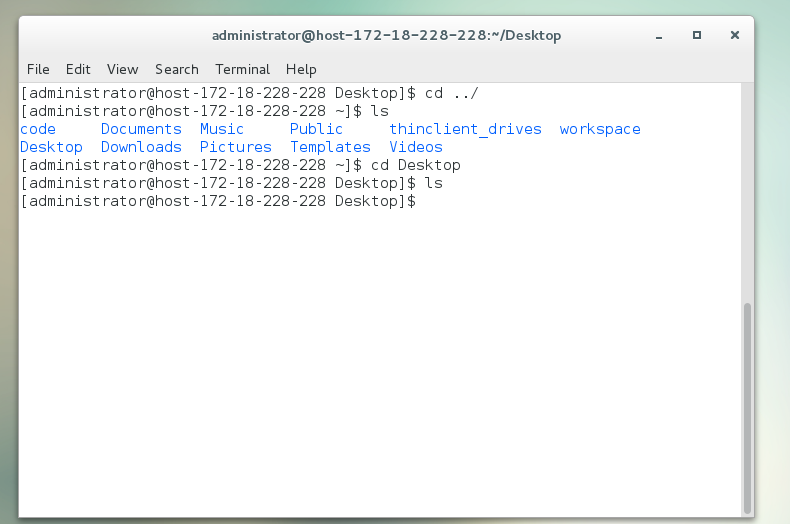
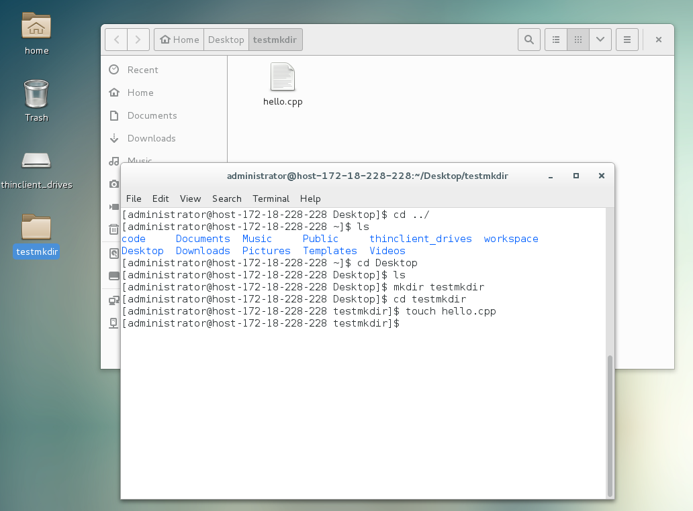
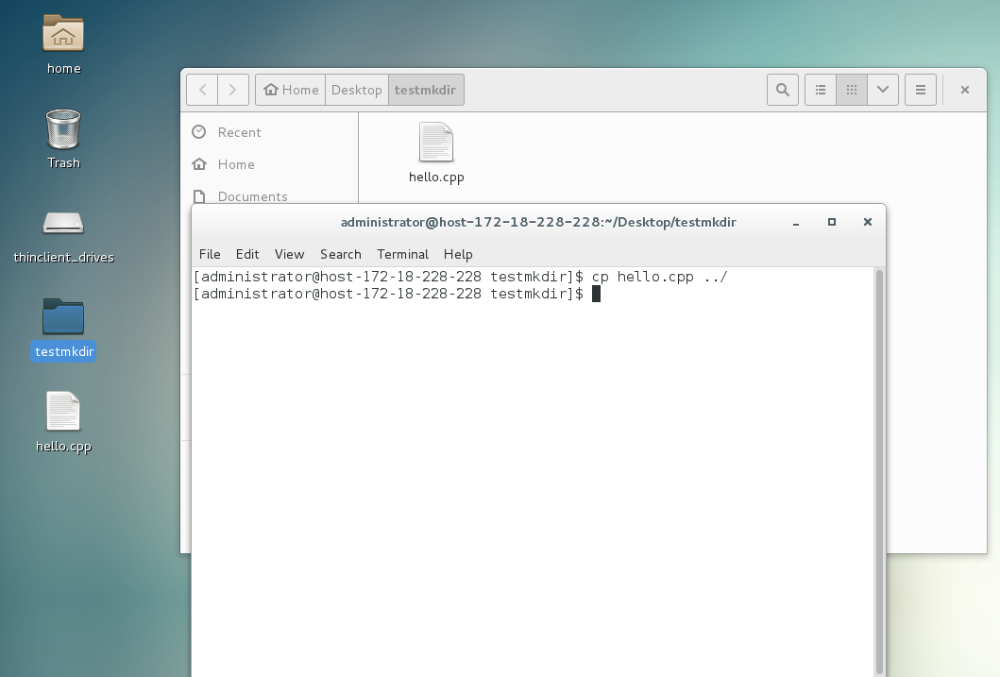
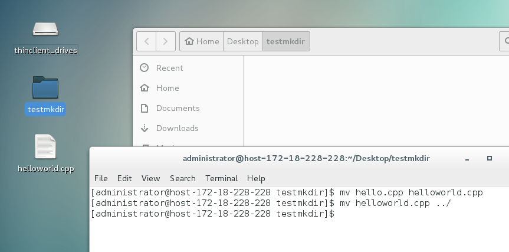
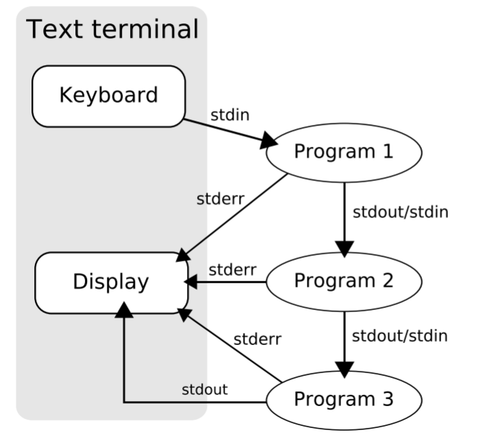

linux 指令入门
cd
打开terminal，进入的是你的主目录路径，通过cd命令，可以进入其他目录。格式为 cd[dir] ，dir是目录的路径，可以是绝对路径也可以是相对路径，其中 ./ 代表当前文件夹， ../ 代表上一目录，也就是父文件夹。如果没有参数，回到主目录（也就是 ~/ ）。
ls
键入 ls [option] [dir] ，你会得到整个dir目录下的未隐藏文件（夹）
option是参数选项，如使用 ls -a ./ 显示当前目录所有文件， -a 显示所有文件， -l 以详细列表显示，-R 以递归的方式列出指定目录下的所有文件
man
如果想知道一个命令更多的信息怎么办，一般又三种方法：
首先是试一下命令有没有自带的help参数，一般是 –help 、 -h ；
其次就是 man ，使用命令 man [command] 来打开一个命令的文档（如果有），通过回
车或者方向上下就可以读到整个文档了，退出的话按 q ；

mkdir、touch和cat
mkdir dir 用来生成一个文件夹，文件夹所在的路径应当存在。
touch 命令一般用来生成一个文件， touch path 会生成一个路径为path的空白文件。
cat 命令会以文本方式读取一个文件，然后把文件中的内容输出到标准输出中，使用cat可以快捷的查看一个文件的内容。

sudo
Linux下有些命令或者执行某些动作是需要权限的，这个有点类似于Windows下的管理员权限。如果你得到一个Permission denied，那么试试 sudo 命令。
sudo [command] 会让你输入用户密码，然后以超级用户的权限执行command命令（superuser do）。
注意： 这里输入密码时，是不会有任何回显的，不要认为没有成功输入
mv cp rm rmdir mv
1 | cp hello.cpp ../ |

mv 移动文件与目录或重命名1
2mv hello.cpp helloworld.cpp
mv helloworld.cpp ../

Linux rmdir命令删除空的目录。rmdir [-p] dirName
-p 是当子目录被删除后使它也成为空目录的话，则顺便一并删除。
1 | 将工作目录下，名为 AAA 的子目录删除 : |
执行可执行文件
当前目录下的可执行文件前面加上./
gcc、g++、gdb
gcc:
- -c 只做编译，不做链接
- -o 生成目标，后面的路径会生成目标文件
-std=c[++]**|gnu**规定ISO标准，如-std=c99就是使用c99标准编译文件，默认的话C语言是c89，C++是c++98/03- -g 插入调试信息，请配合gdb食用
- -W** 警告某种规则，常见是-Wall，打开所有警告，可用值可以使用可以百度或者查看官方文档
- -Werror 把警告视为错误
- -Wno-** 关闭某种警告，可用值与上面相同
- -I 将路径添加到预处理默认路径
- -L 将路径添加到链接库默认路径
- -l 链接的时候链接库默认路径下的库文件，如-lgtest会链接/usr/lib或者/usr/local/lib下的libgtest.a文件或许libgtest.so文件（静态库或者动态库）
- -pthread 多线程代码使用
gdb:
如果你编译代码的时候有加-g参数，那么你就可以使用gdb调试你的代码了
使用gdb <program>可以对可执行文件进行调试。
grep、locate、find 查找
如果想查找文档中的某些信息，使用grep绝对是个好选择
grep -i regex file会将file中匹配了正则表达式的行输出，请注意这里是行为单位的find可以在特定文件夹中搜索匹配规则的文件，规则比较复杂，常用的是 -name 参数，可以查找名字匹配正则表达式的文件（包括文件夹，毕竟Unix一切皆文件嘛，文件夹也不例外）
locate命令可能需要通过
sudo apt install locate安装，通过 locate name 可以定位文件位置，也就是查找文件啦
chmod
Linux下的文件是有权限控制的，使用 ls -l 可以看到每行最前面有-rwxrwxr-x之类的，这是描述用于文件的属性与权限。第一个字符代表文件是否为目录，如果是则为d，否为-；接下来九个字符每三个为一组，分别代表用户，组，和其他人的权限，三个字符分别代表读写执行的权限，即r、w和x。一个二进制文件必须要有可执行权限才能运行。为了改变文件的属性，可以使用命令 chmod [option] mode ... file ... 来更改文件权限。mode是指文件的权限更改模式，主要有以下两种类型：
一个三位的八进制数。这个八进制数从高位到低位分别代表用户、组和其他人的权限模式。每个位是1、2、4或者它们的和，1代表执行，2代表写，4代表读。如7 = 1 + 2 + 4，所以7代表有读写执行的权限，而5= 1 + 4，所以5代表有读和执行，但是没有写的权限。如果将这个三位八进制数写成二进制，每一位0正好对应前文说道的后九位的-，而每一位1对应字符。如数字0775写成二进制是111111 101，对应的就是rwx rwx r-x。正所谓一言不合777，
chmod 777 path将文件的所有权限给了所有人，是很不安全的行为。[a|u|g|o][+|=|-][rwx]的格式。其中a代表全部，u代表用户，g代表用户组，o代表其他，+是加上权限，=是权限改为，-是除去权限。如chmod u+x a+r a.out是使得用户可执行，全部可读文件a.out
Linux管道与（真）grep
一个由标准输入输出链接起来的进程集合，所以每一个进程的输出（stdout）被直接作为下一个进程的输入（stdin）

使用管道操作符 | 将多个命令连接起来，将前一个命令的输出作为当前命令的输入，就像管子一样字符串在命令之间流动。
1 | apt list | grep ${package}\ \\[installed\\] #快速查找软件包是否安装 |
使用管道+grep，可以极大减少无用信息的输出，极大地提高你的工作效率
当然，还有 less 命令可以使得长长的输出逐页输出，翻页随心所欲。
bash的初始化脚本
严格意义上说这是题外话，但是我觉得跟大家分享一下还是有必要的一般来说有两个文件是在bash启动的过程中比较重要的，一个是/etc/bash.bashrc，另一个是~/.bashrc，主要都是bash的配置命令。文件/etc/bash.bashrc会在系统启动时执行，而~/.bashrc会在用户打开bash的时候执行。如果你在linux或者Windows中装过JVM或者JDK，一定忘不了要设置环境变量，而在Linux下，一般是在写在/etc/bash.bashrc中，这样开机的时候就会把
JDK或者JVM的目录添加到$PATH中.